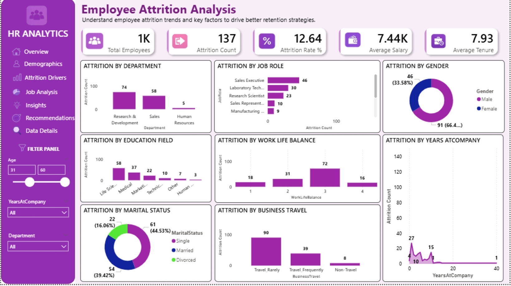

Case Study · HR & Workforce Analytics
Employee Attrition Analysis
Excel · Power BI · DAX

Retention efforts were reactive, not targeted
HR was losing employees at a steady pace but had no structured way to see which departments, roles, or employee segments were most at risk. Retention initiatives were being applied broadly across the company rather than focused on the groups actually driving the attrition rate, wasting effort and budget on employees who were unlikely to leave anyway.
The goal was to turn a raw 1,000-employee HR dataset into a clear picture of where attrition was concentrated and why, so retention strategy could be targeted rather than guessed at.
From HR records to a retention risk map
- Structured the raw HR dataset. Organized records for 1,000 employees across department, job role, education field, marital status, tenure, and business travel frequency.
- Defined the core attrition metric. Calculated a headline attrition rate of 12.64%, based on 137 employees who left out of the total workforce.
- Segmented attrition by department and role. Broke down the 137 exits by department (Research & Development, Sales, HR) and by specific job role to find concentration points.
- Layered in demographic and lifestyle factors. Cross-referenced attrition against gender, marital status, education field, and years at the company.
- Analyzed work-life balance and travel data. Compared attrition counts across work-life balance ratings (1–4) and travel frequency categories to test whether they correlated with exits.
- Built an age and department filter panel. Added interactive filters (age range, years at company, department) so HR could isolate specific employee segments on demand.
- Published KPI cards for quick reads. Surfaced total employees (1K), attrition count (137), attrition rate (12.64%), average salary (₹7.44K), and average tenure (7.93 years) as top-line metrics.
What the numbers showed
This single role accounted for the largest share of attrition by job role, well ahead of Laboratory Technicians (30) and Research Scientists (23).
Research & Development was the highest-attrition department, ahead of Sales (58) and far ahead of HR (5) — the opposite of what role-level data alone would suggest.
Employees rating their work-life balance a 3 out of 4 had the highest attrition count (72), more than double the next-highest rating band.
Counterintuitively, employees who rarely traveled for business made up the largest share of attrition — more than double frequent travelers (39).
Of the 137 employees who left, 91 were male and 46 were female — a gender split worth watching for underlying causes.
Employees with a Life Sciences education background left at nearly double the rate of the next most common field, Medical (37).
What HR should do next
- Prioritize retention interviews and stay-conversations with Sales Executives and R&D staff first, since they account for the largest concentration of exits by role and department respectively.
- Investigate the "Travel_Rarely" attrition spike specifically — it runs counter to the common assumption that frequent travel drives burnout and exits, and deserves a root-cause review rather than a generic wellness fix.
- Re-examine what a work-life balance score of "3" actually means to employees, since it drove more attrition than either the lowest (1) or highest (4) ratings — the relationship isn't linear.
- Build a targeted retention track for early-tenure Life Sciences hires, given their outsized share of exits relative to other education backgrounds.
- Set up a quarterly refresh of this dashboard so HR can catch early shifts in attrition concentration before the annual numbers move.